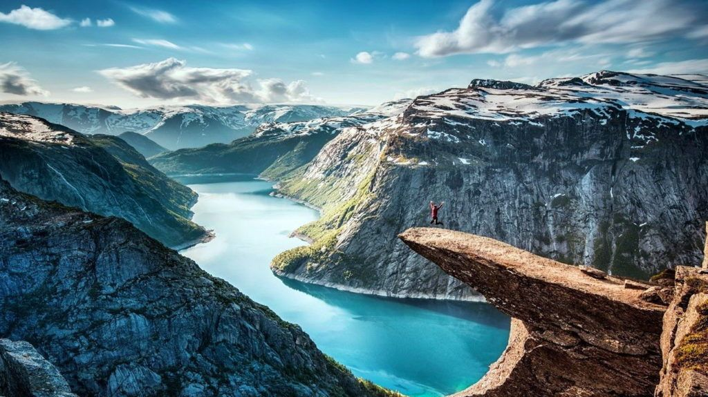
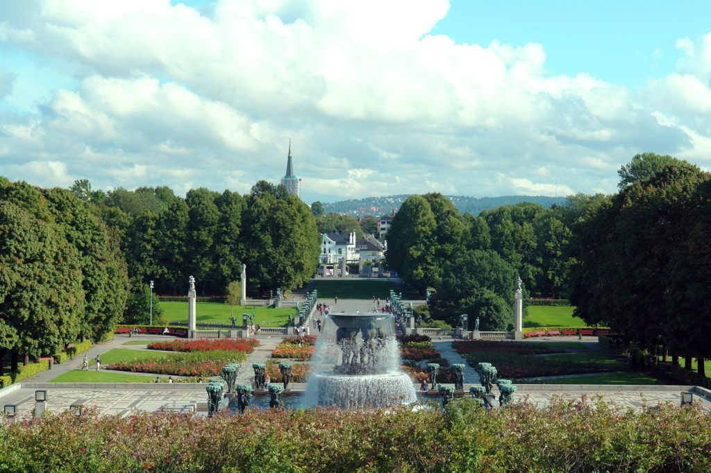
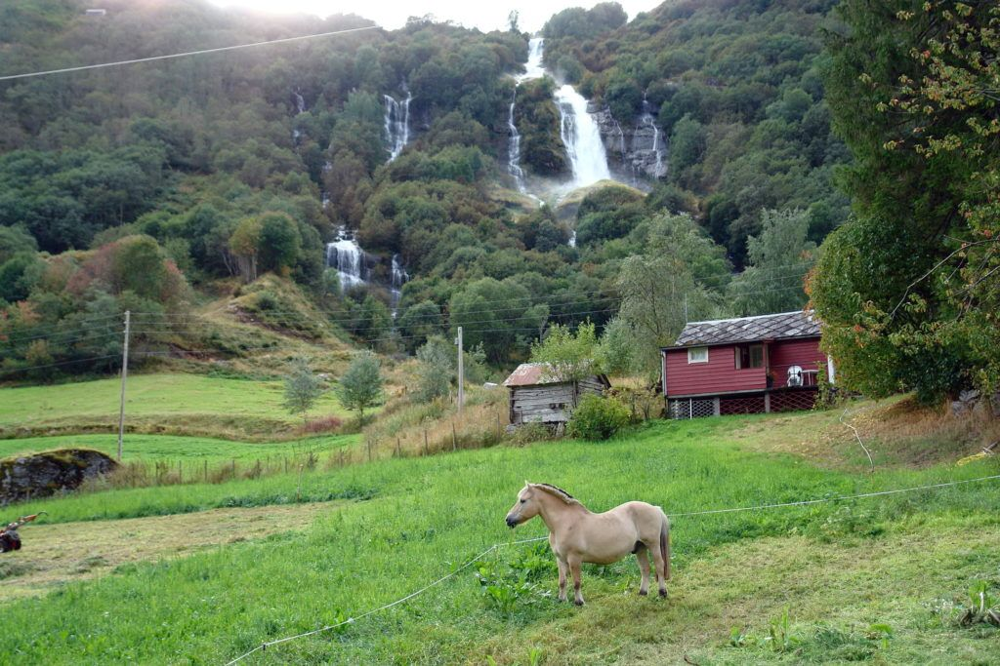
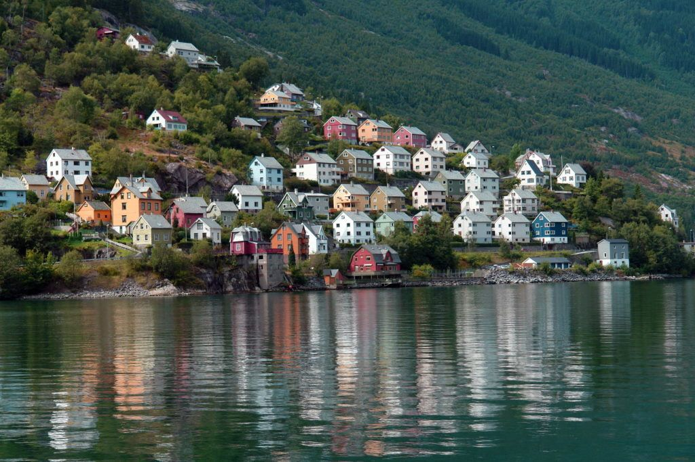

Королівство Норвегія / Kongeriket Norge
Земля фіордів, льоду і полярних сяйв, Норвегія (Норвеґія, норв. Norge) мабуть, сама «богатирська» країна на всій земній кулі. Народжуються тут виключно вікінги та валькірії, яких не лякають: холод, непрохідні ліси, сувора північна природа. До того ж у норвежців наявності прямо-таки маніакальна тяга до небезпечних (і згодом славних) пригод. Фрітьоф Нансен, наприклад, в юному 27-річному віці, вийшовши на лижах з рідної країни, відмахав на своїх двох майже через всю Гренландію, після чого очолив експедицію до Північного Полюса і відкрив купу територій на шляху. А не менш знаменитий Тур Хейердал мало того, що цілий рік прожив Робінзоном на безлюдному острові в Маркізькому архіпелазі, так ще після цього переплив Тихий океан від Південної Америки до Полінезії (а це, між іншим, 8000 км!) – і це на примітивному плоту з вітрилами. Секрет успіху, яким Норвегія ділиться зі своїми громадянами, здається нам, точніше за все озвучив сам Хейердал. “Кордони?» — сказав він. «Чув, що вони існують, але ніколи їх не бачив».
Зміст
Норвегія (Королівство Норвегія)
Для туристів країна цікава мальовничими фіордами і затишною столицею Північної Європи Осло, відмінними гірськолижними курортами і заполярною екзотикою, смачною і ситною кухнею (де лосось — всьому голова), цікавими музеями і прекрасною екскурсійною програмою. Протягом понад півтори тисячі кілометрів Норвегія межує зі Швецією, на 736 км простягнувся її кордон з Фінляндією і близько двохсот кілометрів прикордонної лінії відокремлює країну від Росії.
Регіони і курорти Норвегії
Столиця Норвегії – Осло, що перемішала кращі риси мегаполісу і провінції. Атрибути першого – сучасні торгові центри, ресторани з нехитрою, але дуже смачною кухнею, а головне, різноманіття культурних пам’яток: незвичайної архітектури, музеїв і галерей. Про провінцію нагадують найширші можливості для відпочинку, що традиційно вважається заміським: місцеві пляжі і гірськолижні траси — нітрохи не гірші, ніж на спеціалізованих європейських курортах.
Якщо душа все ж просить географічного розмаїття, Ласкаво просимо в інші Норвезькі міста. Один з найбільш впізнаваних — Берген зі знаменитою набережною середньовічного кварталу Брюгген, художніми галереями та іншими пам’ятками. Тут щорічно проводяться всілякі фестивалі, звідси стартують більшість екскурсій по фіордах.
Трондхейм — місто університетів і технологій. Найцікавіше — в районах Сульсиден і Баккланде з низками затишних кафе, антикварних крамниць і бутиків Норвезьких дизайнерів. Головна екскурсійна перлина — бароковий Стіфсгорден, найбільший дерев’яний палац у Скандинавії. Ще один освітній центр — Ставангер, де є не тільки інститути та лабораторії, а й найбільш протяжні в країні пляжі, мальовничі фіорди та історичні пам’ятки епохи вікінгів.
Неймовірної краси природа оточує і містечко Флом в однойменній долині. На місці величних льодовиків — музей просто неба і незабутні піші та залізничні маршрути уздовж рукавів Согне-фьорда — другого за величиною в світі.Нарвік за Полярним колом приваблює спортсменів-екстремалів, Олесунн — втілення гарного стилю ар-деко, «ворота в Арктику» Тромсе відомий запаморочливими краєвидами, які освітлюють північне сонце і полярне сяйво. Для шанувальників гірських лиж відкриті курорти Хемседал, Хафель, Квітфель, Трюсіль, Холменколлен і Гейло. Повний список цікавих для відвідування міст шукайте на нашій сторінці міста. Різниця в часі з Києвом – 1 година (влітку час не відрізняється)
Клімат
У прибережних областях Норвегії — помірний морський клімат (на крайній півночі — субарктичний). У внутрішніх областях, особливо в гірських районах, клімат континентальний — більш теплий влітку і холодний взимку. Температура січня — від +2 °C на південному заході до -12 °C на півночі, липня — від +15 °C до +6 °C відповідно, хоча іноді повітря прогрівається до +25 °C навіть на півночі. Екзотика Заполяр’я в тому, що в середині зими тут стоять полярні ночі, а в середині короткого літа сонце світить навіть опівночі.
Віза та Митниця
Норвегія входить в число країн-учасниць Шенгенської угоди. З метою туристичного відвідування країни з 11 червня 2017 року діє безвізовий режим — до 90 днів. Потрібен біометричний паспорт, можливий в’їзд за паспортом старого зразка (при наявності відкритої візи)
Мандрівник, який порушив митні правила, швидше за все позбудеться не тільки поточної візи, але і можливості легально потрапити на територію Норвегії протягом досить тривалого терміну.
Ввезення та вивезення іноземної валюти не обмежене, суми понад 25 000 NOK потрібно декларувати. Категорично заборонено ввозити в країну м’ясні та молочні продукти, а також свіжі овочі. Безмитно ввозиться до 2 л пива, до 1 л міцних спиртних напоїв (міцністю до 60 °) і до 1 л вина (до 22 °) — або до 2 л вина, якщо міцні алкогольні напої не ввозяться; а також до 200 сигарет або 250 г тютюну; предмети і речі домашнього ужитку — в межах особистих потреб; харчі — до 10 кг; автомобільний бензин — не більше 200 л (у тому числі не більше 10 л в каністри). Ввезення слабоалкогольних напоїв і тютюнових виробів дозволяється особам, які досягли 18 років, міцних — 20 років. Ціни вказані на жовтень 2018 р.
Заборонені до провезення будь-яка зброя, живі рослини, автомобільні «антирадари». Дозволено ввезення лікарських препаратів для особистого користування, за умови підтвердження (рецепта) від лікаря. Не можна вивозити вибухівку, боєприпаси, зброю і наркотики. Об’єкти культурної спадщини повинні супроводжуватися спеціальними сертифікатами.
Tax free
Норвегія входить в число країн, що використовують систему Tax free: туристи, які здійснюють покупки в спеціально позначених магазинах на суми від 315 NOK, можуть повернути до 19 % їх вартості. Для цього буде потрібно попросити на касі чек, де будуть вказані точна вартість товару, розмір ПДВ і паспортні дані Покупця. Деякі магазини повертають Tax free прямо на місці, в інших випадках потрібно пред’явити чек разом з паспортом та нерозпакованими речами на митниці (не пізніше ніж через місяць з моменту придбання), отримати штамп, а потім звернутися в пункт Cash Refund в аеропорту за видачею коштів.
Як дістатися до Норвегії
У Норвегії кілька міжнародних аеропортів: в Осло, Бергені, Кіркенесі і Шпіцбергені. Найбільший авіавузол, Гардермуен, базується в столиці. Прямих рейсів з України до Норвегії на жаль немає, але переліт з авіакомпанією “Air Baltic” з пересадкою в Ризі займе близько 5 годин.
Можна дістатися рейсами авіакомпанії “LOT Polish Airlines” Київ — Варшава — Осло (загальний час у польоті — близько 5 годин). Рейсами авіакомпанії “KLM Royal” Київ — Амстердам — Осло (Сандефьорд) (загальний час у польоті — близько 9 годин). Рейсами авіакомпанії “Air France” Київ — Париж — Осло (загальний час у польоті — близько 10 годин).
Транспорт
Залізнична мережа Норвегії складається з 9 основних магістралей, що з’єднують практично всі великі міста. Комфортабельні потяги, з розетками і безкоштовним Wi-Fi (правда, щоб скористатися ним, доведеться створити профіль на оф. сайті Норвезьких залізниць). Квитки бувають двох категорій: стандартні, що підлягають поверненню, і Minipris — безповоротні, зате дешевші. Купувати їх можна онлайн, в автоматах на станціях або в самих поїздах з надбавкою близько 40 NOK.
Найбільший автобусний оператор — Nor-Way Busexpress (оф. сайт на англ.), є також бюджетні та люксові перевізники. Більшість автобусів оснащені біотуалетами, кондиціонерами та іншими зручностями. Орієнтовна вартість поїздки зі столиці у Флом – 520 NOK.
У західній частині Норвегії, уздовж і поперек порізаної глибоководними фіордами, найзручніший і швидкий спосіб пересування — по воді. Більшість поромів, швидкісних суден і катамаранів ходять часто, проблем з очікуванням не виникає. Плата за проїзд на поромах — тільки готівкою, кредитні картки не приймаються.
Громадський транспорт всередині міст
У більшості норвезьких міст є автобуси і трамваї, столицю і прилеглі райони покриває мережа автобусних ліній, метро (T-bane), трамваїв і поромів. Одноразовий квиток на будь-який вид транспорту в Осло коштує від 35 NOK (на всі зони — 123 NOK) і діє протягом години після компостування (перевезення велосипеда оплачується окремо). Добовий проїзний — 105 NOK на одну зону (237 NOK на все), місячний — 736/1876 NOK відповідно.
Таксі досить дороге і працює тільки в межах міста. Приймаються кредитні картки. Всі машини радіофіковані, тому замовити їх можна з будь-якого телефону, так само як і зловити на спеціальних стоянках або прямо на вулиці. Посадка обходиться від 40 NOK, кожен км шляху — від 10 NOK.
Оренда авто
Для оренди автомобіля необхідна наявність міжнародних водійських прав, кредитної картки та оплаченої страховки (або внесеної грошової застави, сума якої залежить від типу автомобіля). Мінімальний вік водія — 18 років.
У Норвегії, як і на всій території Скандинавії, ближнє світло повинно горіти при русі в будь-який час доби — часта зміна погоди іноді раптово погіршує видимість до мінімуму. За невиконання вимог — штраф у 2000 NOK. Попри хорошу якість, дороги в Норвегії вимагають від водія обережності.
Орендувати компактний автомобіль можна за 570 NOK в добу, універсал — за 660 NOK, преміальну модель або позашляховик — за 1050 NOK. Вартість бензину — 15 NOK за 1 л. В країні серйозні штрафи за відсутність ременя безпеки (2700 NOK), проїзд на червоне світло (5000 NOK) та особливо — за керування автомобілем у стані алкогольного сп’яніння (6000-10 000 NOK в залежності від кількості випитого). Всі стоянки в країні платні, за їх межами паркуватися не можна. Розщедритися доведеться й за в’їзд на автомобілі в межі Осло і Бергена.
Зв’язок і Wi-Fi
Найпопулярніші мобільні оператори в Норвегії — NetCom і Telenor, чиї сім-карти вигідніше купувати для переговорів всередині країни та користування інтернетом. Підібрати тариф можна в салоні зв’язку, для підключення знадобиться паспорт (в деяких випадках — ще й адреса тимчасового проживання в країні). Вартість «сімок» варіюється в межах 100-700 NOK в залежності від обсягу включеного трафіку і інших умов. Найдешевші дзвінки в Україну — в оператора Lebara: від 1 NOK за хвилину при підключенні до тарифу World.
На Норвезьких вулицях встановлені 3 види таксофонів: чорні (приймають тільки монети гідністю 1-20 NOK), зелені (активуються за допомогою пластикових карт) і червоні (універсальні). Телефонні карти номіналом 35-210 NOK продаються в поштових відділеннях і кіосках Narvesen. Хвилина розмови коштує від 2 NOK, з 17:00 по буднях і цілодобово у вихідні — дешевше.
Бездротові точки Wi-Fi є в аеропортах, кафе і готелях, але підключення найчастіше платне: 45-90 NOK в годину. Щоб не розоритися, краще відразу придбати місцеву «сімку»: наприклад, абоненти Telenor платять за безлімітний інтернет від 10 NOK в добу.
Готелі в Норвегії
Проживання у норвезьких готелях обходиться дорожче, ніж в середньому по Європі, але не потрібно впадати у відчай: на вихідних бувають знижки, великим компаніям і сім’ям пропонують спеціальні тарифи, та й вибір місць для ночівлі величезний. Вимогливим мандрівникам краще звернути увагу на фешенебельні мережеві готелі або історичні готелі De Historiske в старовинних будівлях з дбайливо відтвореними інтер’єрами. Шанувальникам екотуризму рекомендуємо традиційні ферми і хатини, а також рибальські будиночки «рорбю» в оточенні фіордів. Найбільш бюджетний варіант — молодіжні кемпінги та хостели.
Ліжко в хостелі Осло коштує від 500 NOK на добу, номер у 2* — від 700 NOK, в 5* – від 1500 NOK. За проживання у Флом доведеться заплатити від 500-600 NOK в день (кімнати в приватних будинках). Номери в «трійках» Ставангера — від 700-800 NOK за ніч, розміщення в історичних готелях — від 1100 NOK в Гейло до 3400 NOK в Беккьярвике.